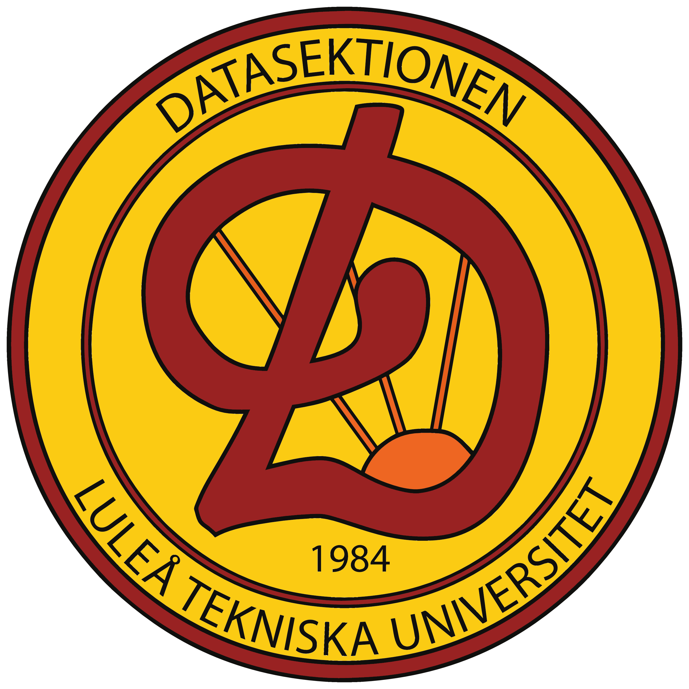

aight b, time to get hella lit
| coolt ord | förklaring |
|---|---|
| Adel | Person som bär frack och går långsamt. Helt jävla broken och overpowered. | akademisk kvart | något som LTU inte har, eller asså... man kan om man vill |
| asp | aspirant. någon som försöker gå med i en förening typ. vissa föreningar använder andra namn doe t.ex. provis, skjul, aspjävel, |
| bonga | konsumera en mängd vätska genom ett rör |
| B192 | Stor föreläsningssal i B-huset där Philm visar filmer varje söndag. |
| Caps | Dryckeslek som går ut på att kasta kapsyler i muggar. Se mer i Lekar |
| CSN | Har du detta så har du lyckats. Kan sökas |
| F40 | Tentasal i F-huset. Gör både fysisk och mental skada på en m.h.a. svartmögel och ångest. |
| Farliga-Huset | F-Huset, byggd av svartmögel. |
| Finsittning | En sittning där det är finare. |
| Fulsittning | En sittning där det är fulare. Mycket drägg och skit. |
| Golvare | En student som arbetar ideellt som golvarbetare på STUK. |
| Gyckla | Något man uppträder på sittningar eller framför Adel/ÖPH. Kan vara allt från sång, dans till skämt. |
| Hajen | Pluggställe i F-huset. Det finns en fat haj där. |
| Hyllan | Pluggställe i C-huset, vid STUK ovanför ljusgården. |
| LADOK | Här kommer dina betyg och resultat på tentan in. Förbered dig på en jävla adrenalinkick när ett mail från LADOK kommer efter tentan. |
| LARV | Luleå ARbetsmarknads Vecka. En mässa som hålls av TKL under Januari. Engagera dig gärna i detta! |
| Ljusgården (LG) | Pluggplats, matplats, dansplats osv. Ligger i C-huset prydd med sköldar från diverse sektioner och föreningar på campus. Förväxlas ej med L-G som syftar på Lars-Göran Westerberg. |
| LLT | Luleå Lokaltrafik |
| LS | Luleå studentkår |
| Läsperiod (LP) | En läsperiod består av 2 kurser. Ett läsår har 4st LP. |
| Microland | Ett rum med plats att äta sin matlåda och värma sin mat. Finns i varje byggnad (doe weird med alla renovationer). |
| Nolla | It's you! Någon som går första året och inte har några högskolepoäng. |
| Ovve | Studentoverall som används på studentrelaterade grejer. Såsom fest. Nice då man slipper förstöra sina kläder. Extra coolt studenter har massa tygmärken på ovven. |
| Phösare | It's us! Studenter som guidar nya studenter in i studentlivet. |
| Porsön | Stället där LTU ligger, basically där alla studenter bor |
| Proppen | Introkurs inom matematik för ingenjörer. |
| Pussen | Finaste badplatsen på campus. Ligger vid pvailjoen på Heden. Bakom A- och B-huset. |
| Regnbågsallén | Långa vägen mellan alla hus på campus. |
| Sektion | Som en fackförening för just ditt program. Din sektion är Datasektionen och sedan Kirunasektionen när du flyttar upp till Kiruna (dvs om du inte byter till Y eller hoppar av lamo). |
| Sexmästeri | En festfixargrupp. Varje sektion har sin egna, men du är välkommen att gå på alla event oavsett vilken sektion du tillhör. Du kan till och med gå med ett sexmästeri som inte tillhör din sektion. |
| Sittiplin | Vett och etikett vid sittningar. |
| Sittning | En middag med roligheter. Kan vara både ful och fin. |
| Smegma | Ica Porsön, vissa kallar det Slemmis men de har fel. |
| STUK | Studentnattklubben/restaurang/pluggställe. Pretty cool |
| Tenta | Kursprov |
| Tentaröj | Fest efter tenta |
| TKL | Teknologkåren, eran kår. Bättre än LS. |
| TP & taktikspya | Tactical puke. Man force-spyr för att må bättre och kunna dricka mer. Eller äta mer |
| VVP1 | våga vägra pass 1 |
| Väst | Föreningar har ofta västar på sig för att visa vilken förening de är med i. |
| Y | Teknisk fysik och elektroteknik |
| Ymdare | En rymdare som bytt till Y |
| ÖPH | Lika seg som adeln, kan däremot tala doe very segt. Bär kårmössa, ett djur vid axeln och mantel. |